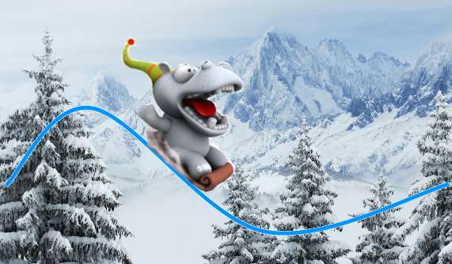

/* Моя кошка замечательно разбирается в программировании. Стоит мне объяснить проблему ей - и все становится ясно. */
John Robbins, Debugging Applications, Microsoft Press, 2000

/* Моя кошка замечательно разбирается в программировании. Стоит мне объяснить проблему ей - и все становится ясно. */
John Robbins, Debugging Applications, Microsoft Press, 2000

Возникла задача сделать анимацию — двигать картинку вдоль заданной кривой. Итак, у нас есть некоторая кривая, например, построенная из набора точек и для красивости сглаженная.
//набор точек
List<PointF> aPoints = new ArrayList<PointF>();
aPoints.add(new PointF(10f, 160f));
aPoints.add(new PointF(100f, 100f));
aPoints.add(new PointF(300f, 220f));
aPoints.add(new PointF(640f, 180f));
//строим сглаженную кривую
Path ptCurve = new Path();
PointF point = aPoints.get(0);
ptCurve.moveTo(point.x, point.y);
for(int i = 0; i < aPoints.size() - 1; i++){
point = aPoints.get(i);
PointF next = aPoints.get(i+1);
ptCurve.quadTo(
point.x, point.y,
(next.x + point.x) / 2, (point.y + next.y) / 2
);
}
Нам нужно получать координаты точек на нашей кривой, чтобы там выводить нашу картинку. Для этого воспользуемся классом PathMeasure. При помощи этого класса «замерим» длину кривой. А чтобы найти нужную точку, можно передать объекту этого класса длину, на которую точка удалена от начала.
Вот так, например, можно получить координаты точки посередине кривой:
PathMeasure pm = new PathMeasure(ptCurve, false);
float afP[] = {0f, 0f}; // здесь будут координаты
pm.getPosTan(pm.getLength() * 0.5f, afP, null);
Последним параметром (я передал там null) можно, аналогично координатам, получить параметры касательной в этой точке.
Более того есть метод getMatrix(), который дает готовую матрицу трансформации — смещение и нужный поворот. Его мы и будем использовать для вывода спрайта.
Matrix mxTransform = new Matrix();
pm.getMatrix(
pm.getLength() * 0.5f,
mxTransform,
PathMeasure.POSITION_MATRIX_FLAG +
PathMeasure.TANGENT_MATRIX_FLAG
);
mxTransform.preTranslate(-bmSprite.getWidth(), -bmSprite.getHeight());
canvas.drawBitmap(bmSprite, mxTransform, null);
Получилось в точности то, что и требовалось:
Полный код приведен ниже или можно скачать проект из репозитория — SpriteAlongPath или воспользоваться меркуриалом — hg clone bitbucket.org/TedBeer/spritealongpath.
/**
* User: TedBeer
* Date: 30/01/12
* Time: 12:32
*/
package net.tedbeer;
import android.app.Activity;
import android.os.Bundle;
import android.content.Context;
import android.graphics.*;
import android.util.Log;
import android.view.Display;
import android.view.MotionEvent;
import android.view.View;
import android.view.WindowManager;
import android.widget.Toast;
import java.util.*;
public class moveSprite extends Activity
{
/** Called when the activity is first created. */
@Override
public void onCreate(Bundle savedInstanceState)
{
super.onCreate(savedInstanceState);
setContentView(new SceneView(this));
}
}
public class SceneView extends View {
private static Bitmap bmSprite;
private static Bitmap bmBackground;
private static Rect rSrc, rDest;
//animation step
private static int iMaxAnimationStep = 20;
private int iCurStep = 0;
//points defining our curve
private List<PointF> aPoints = new ArrayList<PointF>();
private Paint paint;
private Path ptCurve = new Path(); //curve
private PathMeasure pm; //curve measure
private float fSegmentLen; //curve segment length
public SceneView(Context context) {
super(context);
//destination rectangle
Display display = ((WindowManager) context.getSystemService(Context.WINDOW_SERVICE)).getDefaultDisplay();
rDest = new Rect(0, 0, display.getWidth(), display.getHeight());
//load background
if (bmBackground == null) {
bmBackground = BitmapFactory.decodeResource(getResources(), R.drawable.winter_mountains);
rSrc = new Rect(0, 0, bmBackground.getWidth(), bmBackground.getHeight());
}
//load sprite
if (bmSprite == null)
bmSprite = BitmapFactory.decodeResource(getResources(), R.drawable.sledge3);
//init random set of points
aPoints.add(new PointF(10f, 160f));
aPoints.add(new PointF(100f, 100f));
aPoints.add(new PointF(300f, 220f));
aPoints.add(new PointF(640f, 180f));
//init smooth curve
PointF point = aPoints.get(0);
ptCurve.moveTo(point.x, point.y);
for(int i = 0; i < aPoints.size() - 1; i++){
point = aPoints.get(i);
PointF next = aPoints.get(i+1);
ptCurve.quadTo(point.x, point.y, (next.x + point.x) / 2, (point.y + next.y) / 2);
}
pm = new PathMeasure(ptCurve, false);
fSegmentLen = pm.getLength() / iMaxAnimationStep;//20 animation steps
//init paint object
paint = new Paint(Paint.ANTI_ALIAS_FLAG);
paint.setStyle(Paint.Style.STROKE);
paint.setStrokeWidth(3);
paint.setColor(Color.rgb(0, 148, 255));
}
@Override
protected void onDraw(Canvas canvas) {
canvas.drawBitmap(bmBackground, rSrc, rDest, null);
canvas.drawPath(ptCurve, paint);
//animate the sprite
Matrix mxTransform = new Matrix();
if (iCurStep <= iMaxAnimationStep) {
pm.getMatrix(fSegmentLen * iCurStep, mxTransform,
PathMeasure.POSITION_MATRIX_FLAG + PathMeasure.TANGENT_MATRIX_FLAG);
mxTransform.preTranslate(-bmSprite.getWidth(), -bmSprite.getHeight());
canvas.drawBitmap(bmSprite, mxTransform, null);
iCurStep++; //advance to the next step
invalidate();
} else {
iCurStep = 0;
}
}
@Override
public boolean onTouchEvent(MotionEvent event) {
if (event.getAction() == MotionEvent.ACTION_DOWN ) { //run animation
invalidate();
return true;
}
return false;
}
}
Источник: Перемещение картинки вдоль произвольной кривой